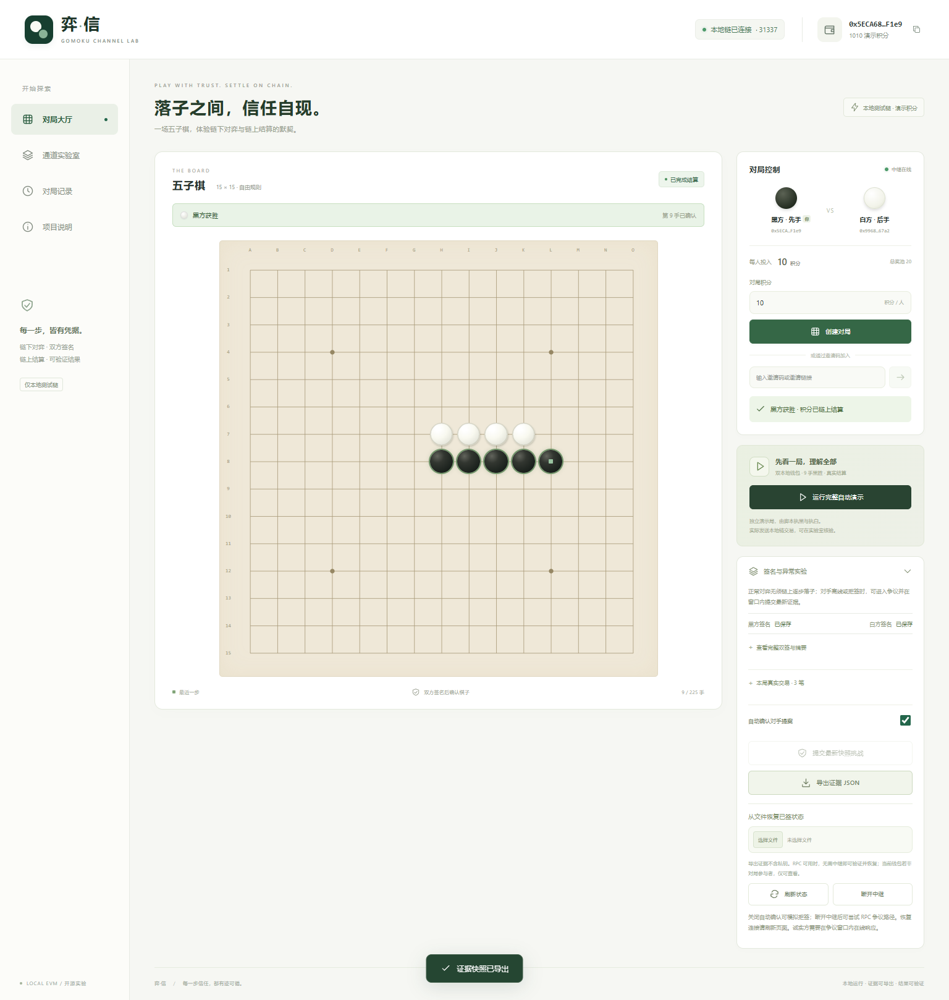

GOMOKU CHANNEL LAB / 软件工程课程设计落子之间，信任自现。
中文15×15五子棋，用链下双签确认每一步，用真实EVM合约结算最终积分。
本页为随项目提供的介绍页，尚未部署为公共网站；完整链功能在本地启动，积分无现实价值。
获取源码与工程包阅读项目报告 PDF打开本机已启动的游戏
三个明确目标
正常每局只发送开通、加入和结算3笔交易；合约验证双方签名与完整合法棋谱；拒签或掉线时通过争议、强制落子和超时完成结算。
| 同口径实测 | 逐步上链 | 状态通道 |
|---|
| 9手黑胜 | 11笔 / 1,231,480 gas | 3笔 / 436,143 gas |
| 10手白胜 | 12笔 / 1,406,433 gas | 3笔 / 448,105 gas |
不含部署/注册；数据来自本地真实EVM回执，不代表公链TPS或真实资产费用。
如何运行
在E:\Gomoku双击“启动游戏.cmd”，然后访问http://127.0.0.1:4173。双人使用两个独立浏览器配置；也可点击“运行完整自动演示”体验双测试钱包真实9手结算。
源码包不包含Node依赖与本地链数据库。安装和复现命令见根目录README，所有缓存和产物均限定工作区。
证据与边界
合约11组、共享协议4组、浏览器8组测试通过，保留JSON、截图、真实回执和失败修复记录。独立观察钱包可导入证据并核验签名和回执。
本项目是本地教学单链，诚实玩家须在挑战期内响应，无watchtower；自由注册积分存在女巫攻击。开发RPC不应暴露公网。未开展真人反馈，不把自动演示当用户试用。
公开发布时需由项目作者提供真实获取地址、验证链接并保留至少一个月；当前本地文件不代表已经公开发布。